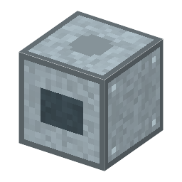

説明
①子ども 水銀の蒸気の風で、残った空気をたたき落とすポンプ。動く部品がない。
②学生 ヒーター 400W。真空容器と、回っている回転ポンプ（前段）の両方のとなりに置く。容器が 10Pa 以下になってから動き、漏れとつり合う 約0.004Pa まで下げる（真空蒸着に足りる高真空）。作り方：ソーダ石灰ガラス×3＋鉄×2＋水銀×2＋タングステン線（ヒーター）。
③大人 1915年、ゲーデは鉄の釜で水銀を沸かし、ガラスの管の中で蒸気を吹く拡散ポンプを作った。1916年、ラングミュアは壁を水で冷やして蒸気を凝縮させる形（凝縮ポンプ）にして、ずっと速くした。これで真空管や電球を高真空にできるようになった。
④ガチ 水銀の蒸気の噴流が下向きに速く流れ、そこに迷いこんだ気体分子を下へはね飛ばす。大気圧では分子が多すぎて噴流が乱れるので、先に前段ポンプで下げておく必要がある。1928年からは水銀の代わりに蒸気圧の低い油が使われた [5-06]。